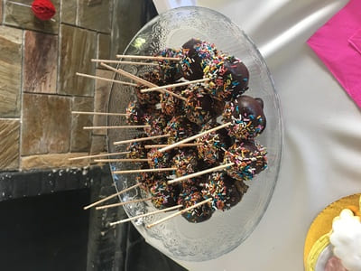
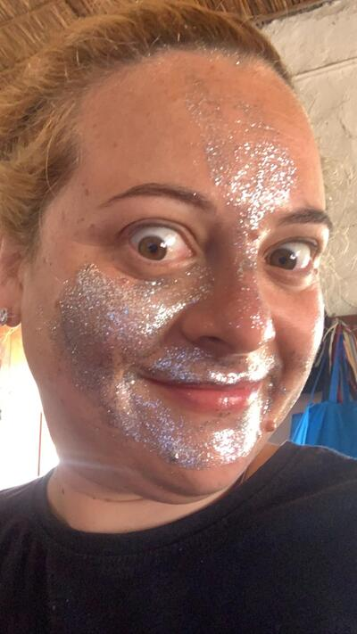
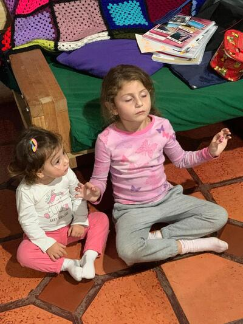
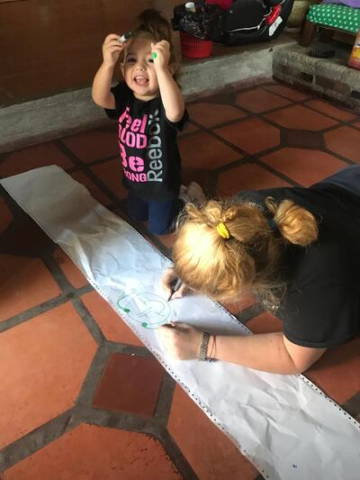

Recetas preferidas
Nuestra receta por excelencia es el "Punto Nieve" dícese del merengue, que luego nos comemos a cucharadas. Cuando descubrimos las Cakepops, a ellos les coparon, y pasó al top cinco de nuestros manjares.
Maquillaje
Otra de nuestras actividades favoritas, es maquilarnos. Nosotros le decimos pintarnos. Después jugamos a que somos cantantes o piratas, todo depende del día. Por lo tanto, mis delineadores y labiales se han resignificado desde que soy "Tía Mangui".
Yoga Time
Federica hace yoga para niñas y niños todos los sábalos de mañana y nos enseña a todos.
Arte en A4 y más...
Mis artistas pictóricos favoritos. Dibujar es otra de nuestras actividades. Todos lo hacen muy bien, y sus dibujos me acompañan siempre.
